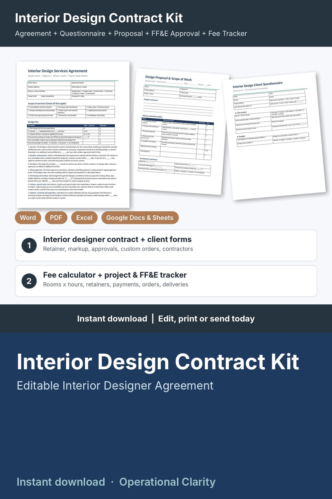

Interior Design Contract Kit

Sign clients with confidence, price every project so it pays you, and never lose track of an order: a complete interior design contract kit with a working fee calculator and project / FF&E tracker, not just a one-page contract.
WHAT'S INSIDE
- Interior Design Services Agreement (Word + PDF, 2 pages): client and project details, scope checklist (consultation, concept, space plan, design development, selections, lighting, FF&E procurement, contractor coordination, installation and styling), design fee table (flat, hourly or hybrid), procurement markup, non-refundable retainer, 14 editable terms (services and additional services, retainer and payment, revisions, client approvals, purchasing and markup, custom orders and returns, delivery and inspection, client-purchased items, contractors and trades, site access and conditions, photography and design rights, termination, liability, governing law), payment record and signatures.
- Interior Design Client Questionnaire (Word + PDF, 2 pages): project goals, rooms, budget for furnishings, trades and design, style, colors, materials, lighting, window treatments, how the client lives (work from home, pets, kids, storage, accessibility), decision makers and access.
- Design Proposal & Scope of Work (Word + PDF, 2 pages): project summary, 5 phases with deliverables, hours and fees, investment summary, what's not included, estimated schedule, next steps and acceptance.
- FF&E Selection Approval & Change Order (Word + PDF, 2 pages): 12-line item approval sheet (room, item, vendor, lead time, qty, price) with payment before ordering and client sign-off, plus a change order for added work, credits, fee and schedule changes.
- Interior Design Fee Calculator & Project Tracker (Google Sheets / Excel, 6 tabs):
* Settings: hourly rate, lowest hourly rate you accept, overhead, billable hours, procurement markup, minimum fee, rounding, card fees, retainer %, hours per room for each phase and complexity factors
* Fee Calculator: rooms, complexity, procurement and installation yes / no, FF&E budget and discount; design hours, design fee, retainer, estimated markup income, overhead, profit and effective hourly rate with a LOW RATE flag
* Projects: contract date, retainer, fee payments, hours logged; fee balance, hours used vs estimate, FF&E totals per project, estimated profit and alerts (CONTRACT MISSING, RETAINER DUE, OVER HOURS, HOURS 80%+, BALANCE DUE, ON HOLD)
* FF&E Tracker: every item with vendor, qty, trade cost and markup; client price, markup earned, client balance, days late and alerts (AWAITING APPROVAL, COLLECT PAYMENT, READY TO ORDER, DELIVERY LATE, ON ORDER, DELIVERED)
* Dashboard: proposals and acceptance rate, fees booked, collected and still to collect, FF&E sold and markup earned, client payments outstanding, profit, hours, effective hourly rate, a project-type table, chart and lists of projects and items that need attention
- START HERE guide (PDF)
HOW IT WORKS
1. Enter your rate, overhead, markup, retainer % and hours per room on Settings.
2. Send the Client Questionnaire, then add a row to the Fee Calculator: the hours, design fee and retainer fill in for your Design Proposal.
3. When the client says yes, send the Services Agreement and add the project with the contract date and retainer.
4. Present furniture and decor with the FF&E Approval form and log each item; order once it is approved and paid. Use the Change Order for anything new.
5. Check the Dashboard weekly for balances, over-hours projects, unpaid orders and late deliveries.
Example data (15 proposals, 11 projects, 26 FF&E items) shows how it all connects; delete it and type your own. Yellow cells = type here, green cells = calculated.
FORMATS
- Word .docx (edit in Microsoft Word, Google Docs, Pages or LibreOffice) + PDF, US Letter
- Excel .xlsx made for Google Sheets (also works in Excel and LibreOffice; no macros)
This is an instant digital download, no physical item will be shipped.
Editable template, not legal advice. Have the agreement reviewed by a local attorney and check your state and local requirements (business licensing, interior design title or registration rules, sales tax on furnishings, insurance) before you use it. Example rates and costs are a starting point: set your own.